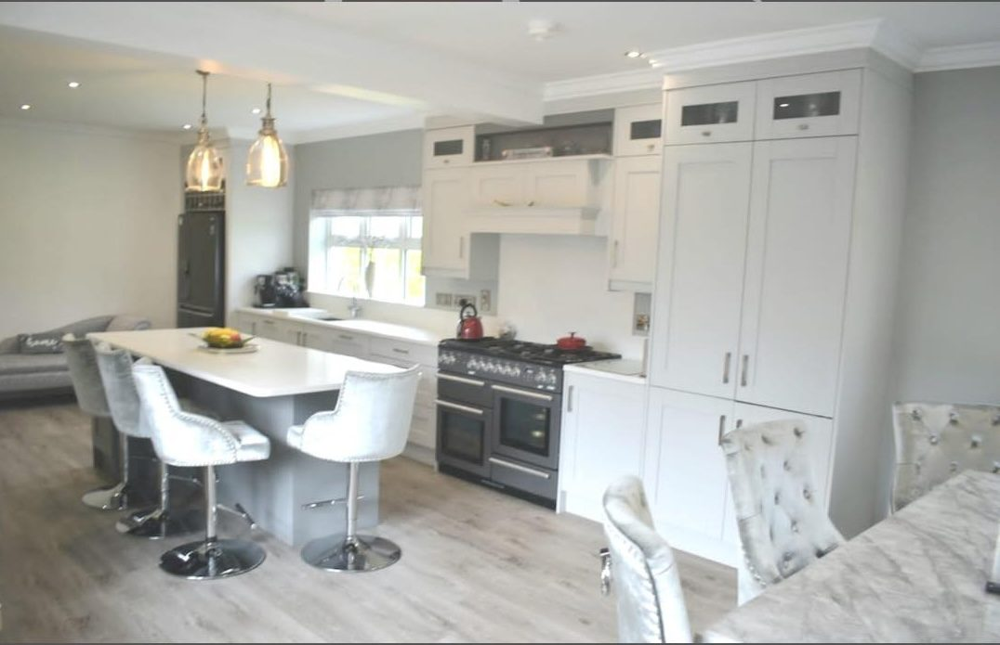

We believe great projects are designed before they're built — drawn, machined and fitted by one maker, start to finish.

View2Build is the work of Paul Murphy. Paul spent 16 years as a joiner in film set construction, building kitchens on the side and between productions.
Film set work is two things at once: batch joinery built fast and to spec, and one-off pieces made precisely under tight deadlines. That's exactly the rhythm of bespoke kitchens and fitted furniture — every job is custom, every job has a date on it, and there's no room for error.
View2Build is that craft, scaled up with a CNC workshop in Pettigo, Co. Donegal.
It's one workshop with one machine. The SCM doesn't care whether it's cutting one kitchen for a Donegal cottage or thirty for a housing scheme.
Same software, same precision, same person quoting and managing it. What changes is the scale — not the process.
Every job is drawn in 3D and agreed before anything is cut — so you see the result before it's built, and there are no surprises on site.
Components are machined to tolerance on an industrial CNC, then hand-finished. The fit is exact because it's cut to the drawing.
Within about an hour of Pettigo and Omagh, delivered and fitted by the same maker who designed and built it — one point of accountability from concept to handover. Further afield, manufacture-and-deliver lets your own fitter complete the install.